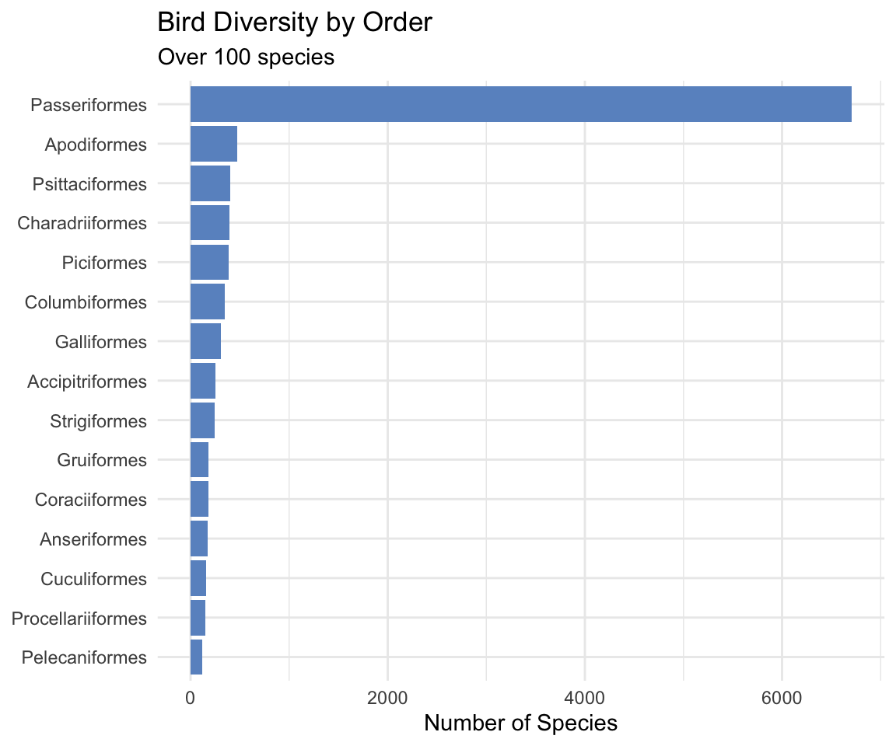
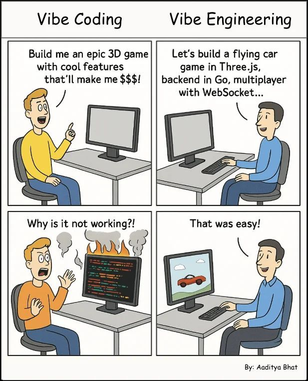

Me, Myself & Claude
How I Leverage AI-Assisted Development to Scale My R-based Data Science Consultancy
Jasmine Daly
Principal Consultant & Founder
Daly Analytics
Principal Consultant & Founder
Daly Analytics
2025-11-12
Who Am I?
- R Developer & Data Scientist since 2014
- Maintainer of 4 R Packages: {shinyLP}, {ttbbeer}, {avilistr}, {shinyfa}
- Principal Consultant focused on delivering solutions with data science, analytics & AI for nonprofits and mission-driven orgs
🔑 Moving Beyond ‘Vibe Coding’
Words matter. Let’s reframe the conversation.
- “Vibe Coding” → Implies reckless, hope-based development
- “Vibe Engineering” → Intentional, accountable AI-assisted development
- “I’m adding a new (agentic) tool to my tool box” → Honest acknowledgment of exploration of this phase of hypergrowth and learning

Part 1: Strategic Thinking Unlocked for Greater Community Contributions
The Mental Bandwidth Shift
Before AI
Client Dev
85%
Biz Dev 15%
→
AI Unlocks
15%
15%
With AI
Client Dev
70%
Biz Dev
25%
Community 5%
What Mental Bandwidth Buys You
- Better Biz Ops: Improving my systems to be automated and Standardized
- Financial Clarity: Time to understand cash flow, pricing strategy, and profitability
- Relationship Building: Networking, content creation, community engagement
- Creative Space: Room to think about what could be built, not just what must be built
The {shinyfa} Package 
Client Problem
Months to navigate large Shiny app
↓
Quick Script
Analyze file structure
↓
CRAN Package
Community tool
Before AI: “Nice someday project.”
With AI: Built and released in weeks.
Output:
| file_name | type | name |
|---|---|---|
| ui.R | input | selectInput |
| ui.R | output | plotOutput |
| server.R | reactive | filtered_data |
| server.R | render | renderPlot |
| modules/map.R | input | sliderInput |
| modules/map.R | render | renderLeaflet |
Catalog of render functions, reactive functions, inputs, and file relationships across your entire Shiny app.
The {avilistr} Package 
New Hobby
Started birding, found taxonomy in Excel
↓
Wrap Excel
11k+ species, Cornell Lab codes
↓
CRAN Package
In a weekend
Before AI: “Nice to have, not crucial.”
With AI: Published with docs in a weekend.
Output:
Passeriformes: 6,700+ species (over half of all birds!)
🔑 The Creative Multiplier
AI assistance doesn’t just save time on what you were already doing. It unlocks what you weren’t previously able to complete before!
- Automated Biz Dev and Biz Ops systems
- Writing better unit tests, documentation, package branding, hex stickers
- Community engagement and knowledge sharing, networking
Part 2: Saying Yes to Bigger & Funner Problems
Optimizing for Professional Joy

The Old Filter
Before AI-assisted development, my filter for new projects was:
“Can I build this in a reasonable timeframe with my current skillset given my existing client workload?”
The New Filter
With AI-assisted development, my new filter has become:
“I can certainly build it! How can I thoughtfully spend time deeply understanding the desired outcome & client constraints?”
Claude Code as My Coding Partner
The Mental Model
- I’m the manager: Setting direction, making architectural decisions
- Claude is my senior developer partner: Implementing solutions, handling boilerplate
- Human in/on the loop: Active technical leadership stays with me
Tips & Tricks for Managing the Partnership
- Be specific with requirements
- Always review generated code
- Use incremental commits
- Feed documentation links
- Ask for multiple options
- Run Claude in parallel across related repos
With Claude’s help I amplify my capacity to take on bigger, more interesting problems.
Client Example: Using GitHub Actions For Data Orchestration
Data Orchestration Repo
GitHub Actions (API, webhooks, Railway)
↓
Load Data in Supabase
RLS rules per client_id for data isolation
↓
Client Dashboards (Quarto)
50+ dashboards on Netlify, each pulls only their data
↓
Template System
Shared components, feature toggles, GH Action PRs for updates
Right-sized enterprise-grade infrastructure built in a few weeks with Claude Code’s help.
Client Project Workflow
- Understand Requirements (Human) → Define the problem and technical approach
- Generate Implementation (Claude Code) → Write the initial code
- Review & Course-Correct (Human) → Read every line, check for issues
- Iterate Based on Feedback (Claude Code) → Fix problems, refine solution
- Final QA & Delivery (Human) → Test thoroughly and ship to client
Human decisions at the start, middle and end. AI execution sprinkled in the middle.
🔑 Ruthlessly Solutions-Focused
AI-assisted development has made me even more ruthlessly solutions-focused for my clients.
- I’m not thinking about syntax—I’m thinking about client outcomes
- I’m not debugging YAML—I’m solving business problems
- My mental energy goes to what matters: understanding client needs and delivering value
The technical details still matter—but they don’t consume my cognitive load anymore.
Part 3: Building Up Your R Intuition Through Volume
Learning Through Volume
Traditional Learning
A few hours for a few appraches
AI-Assisted Learning
A few minutes for many approaches
Fast iteration builds intuition faster than slow deliberation.
Mistake #1: Package Confusion
Claude doesn’t read the docs—just like you when you’re rushing
- What happened: Asked Claude about
{shinyfa}→ it hallucinated “Font Awesome icons” - The real error: Like installing a package and guessing without reading vignettes/examples
- It’s not just new packages: Even with {ggplot2}, Claude confuses function arguments
- Why this happens: You’re experienced, busy, assume things should come easy, so you circumvent
- The lesson: This forces you to actually read documentation and verify behavior
- Fix strategy: Feed Claude the documentation URL, then it self-corrects
This mistake makes you better at evaluating package quality and knowing where good docs live.
Mistake #2: Data Structure Assumptions
Claude assumes instead of checking—sound familiar?
- What Claude does: Assumes column names, data types, relationships
- Example: Used
avilist_global(doesn’t exist) instead ofavilist_2025 - Example: Assumed lowercase
order_namewhen actual column isOrder - Example: Infers connections between columns instead of asking for lookup tables
- Why this happens: Experience breeds assumptions; you skip verification when busy
- The lesson: Use mcptools to give Claude actual R session context
- Fix strategy:
names(data),str(data), or let mcptools read your environment
This mistake teaches you proper data inspection habits—skills you use constantly.
Mistake #3: Over-Abstraction
Why is Claude (or you) always doing it the hard way?
- Claude’s tendency: Always reaches for complex solutions first
- Example: Tried 3 different Sankey packages with hallucinated functions
- Example: Creates nested functions when a simple dplyr chain works
- Why this happens: You want to show expertise, build “proper” systems, over-engineer
- The lesson: Simple is better. Ask “Why are you doing it the hard way?”
- Fix strategy: Ask for multiple options, choose the simplest that works
This mistake teaches you that simplicity is a skill—recognizing unnecessary complexity.
Building Better Prompts from Mistakes
Each mistake pattern teaches you how to redirect Claude (and yourself)
- Package confusion → Feed documentation links upfront
- Data assumptions → Use mcptools, provide
str(data)output, give lookup tables - Over-abstraction → Ask for multiple approaches, request “simplest solution”
Learning at Scale: You encounter these patterns 10x/day instead of 1x/week. Each failure refines your prompting skills AND your R intuition.
You’re not becoming dependent—you’re becoming a better technical leader who knows how to redirect when things go wrong.
🔑 The Art of the Practice
Skill development is a systematic approach—research, analysis, consistent action
- Not about the final product alone → It’s about the process of getting there
- Research & Analysis → Understanding patterns, learning from mistakes, building intuition
- Consistent Action → High-volume iteration, failing fast, course-correcting
- Achieving Mastery → Through deliberate practice and pattern recognition
- Personal Growth → Overcoming challenges, maintaining motivation, staying disciplined
AI-assisted development accelerates the practice by increasing volume—but the discipline of learning is still yours.
Conclusion: Human In/On the Loop
Your AI Values Exercise
Before your next AI-assisted project, write down:
- What I will always do myself
- What AI can help me with
- What I need to understand deeply
- What I’m comfortable delegating
Final Thoughts
“When AI frees up your mental bandwidth, you don’t get lazy—you get strategic.”
Build with intention.
Stay curious about failures.
Stay strategic about solutions.
Stay joyful in the work.
Thank You
Questions?
Contact: jasmine@dalyanalytics.com
GitHub: @jasdumas
Website: dalyanalytics.com